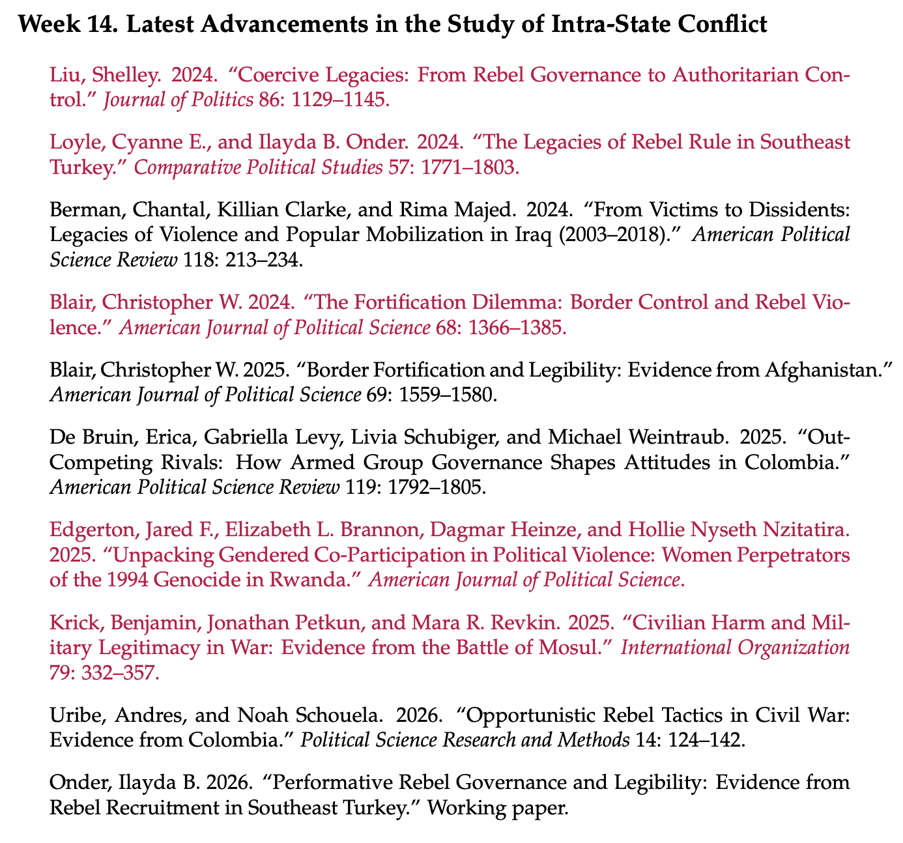
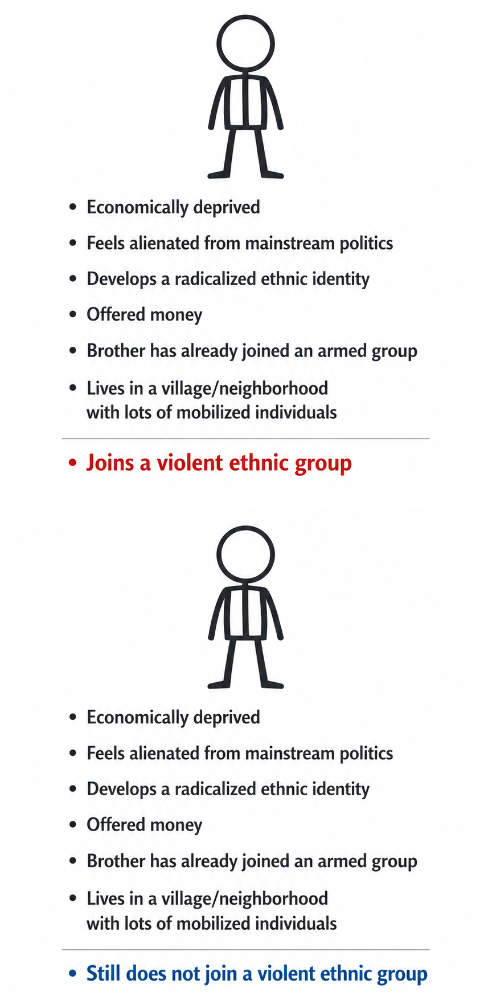
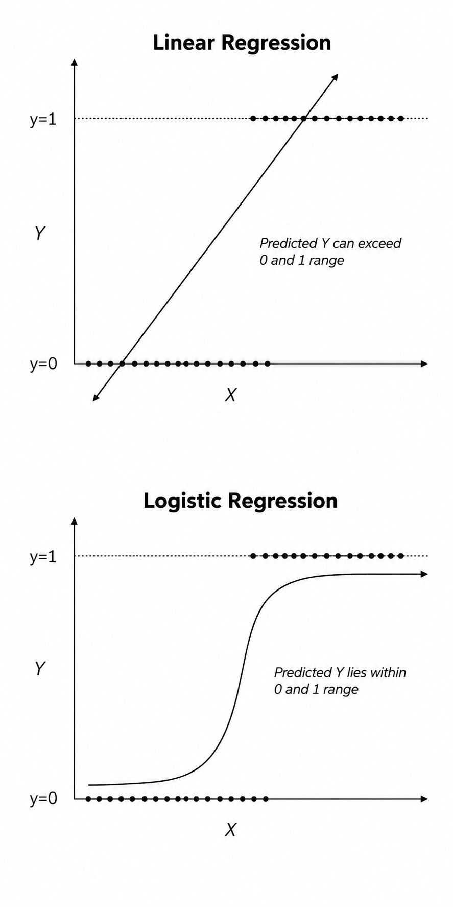

At Texas A&M University, I teach undergraduate and graduate courses in international relations, conflict studies, and quantitative research methods. My teaching brings the substantive concerns of my research into dialogue with the methodological tools students need to engage with this scholarship. At the undergraduate level, my courses introduce students to core debates in the study of conflict and equip them with foundational skills in statistical analysis. At the graduate level, my seminars survey theoretical and empirical traditions in the study of international and civil conflict.

POLS 631 Conflict Studies (Graduate)
This seminar surveys major theoretical and empirical research on international and civil conflict. The course introduces students to the core analytical frameworks used in the study of war, beginning with foundational debates about why wars occur. Early weeks focus on rationalist approaches to conflict, including bargaining theory, information problems, and commitment problems. The course then examines how domestic politics shapes the outbreak and conduct of international conflict, with readings exploring the role of political institutions, leader incentives, and audience costs in influencing signaling, credibility, and crisis escalation. The second half of the course turns to intrastate violence. Students engage with major explanations for the onset of civil war, including ethnic conflict, political exclusion, economic incentives, and state capacity. Later weeks consider the behavior of armed actors during civil war and the political orders that emerge in contested territories. The final weeks examine state responses to insurgency and terrorism, including counterinsurgency strategies, repression, and leadership targeting, before concluding with recent work on the long-term political and social legacies of civil war and rebel rule.
Syllabus
POLS 312 Ethnic Conflict (Undergraduate)
This course examines the causes, dynamics, and resolution of ethnic conflict through a comparative and theoretically grounded perspective. The course is organized into six parts. We begin by unpacking key concepts such as ethnicity, nationalism, and religion, and by examining how ethnic identities become politically salient. The second part explores the causes of violent ethnic conflict. The third part investigates mobilization in violent ethnic conflict, focusing on how individuals and communities join or support ethnic violence. The fourth part turns to the dynamics of violence, examining why and how ethnically motivated armed groups target civilians, engage in mass killing, terrorism, or sexual violence, and how local-level interactions shape patterns of violence in ethnic conflict. In the fifth part, we move beyond violence to study the non-violent dimensions of ethnic conflict, including ethnic voting and public goods provision, during and in the aftermath of conflict.
Syllabus
POLS 209 Introduction to Political Science Research (Undergraduate)
The primary goal of this course is to teach you how to turn things into data, analyze them using statistics, and make inferences using statistical analysis about real-world issues. The syllabus lists some more specific course objectives below, but the “big picture” purpose of this course is to give you the foundational quantitative tools you may need to answer questions about the political and social scientific phenomena you are interested in. We will spend part of the course discussing how to generate hypotheses and design research in a way that allows you to answer research questions using quantitative data. We will learn about various statistical techniques for analyzing data and testing hypotheses. Yes, that means we will do some math. And yes, that means we will use computer software (R and RStudio specifically) to visualize and analyze data as well. Throughout the semester, you will also design and carry out an independent research project to test your own theory about a topic of your own choosing. My goal is to help you develop a statistical literacy that will help you become a conscientious and critical consumer of news, political events, and scientific research. Hopefully, the skills you acquire in this class will also assist you to develop competency in the technical tools you may need to compete in an increasingly large-N, data-driven world.
Syllabus